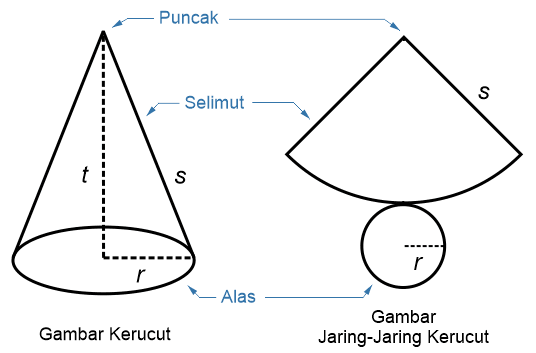

|  |
Penjelasan
6.Kerucut
Kerucut merupakan bidang ruang yang terdiri dari satu bidang alas lingkaran dan sebuah titik puncak dengan selimut bidang berbentuk juring lingkaran dan busurnya dilengkungkan semulus keliling lingkarannya.
Volume = 1/3 · Luas Alas · Tinggi
Luas Permukaan = π·r · (r + s)
|